part one
A solar-powered website

LOW←TECH MAGAZINE 1
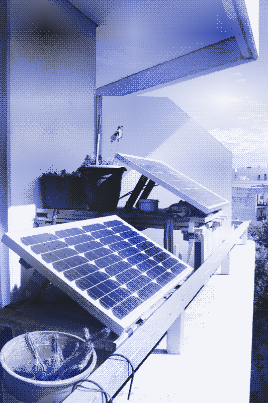
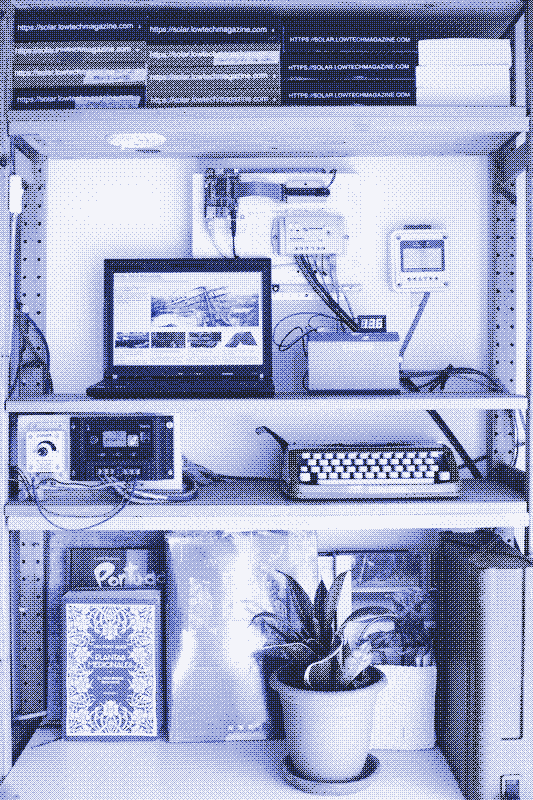
Looking at past technology for inspiration: the world wide web was developed in 1989, and the first website was made public on 23 August 1991. It described hypertext, the underlying mechanism for connecting information on the internet. The website contained no specific styling rules (CSS was not supported) or images and still works as a functioning website today!2
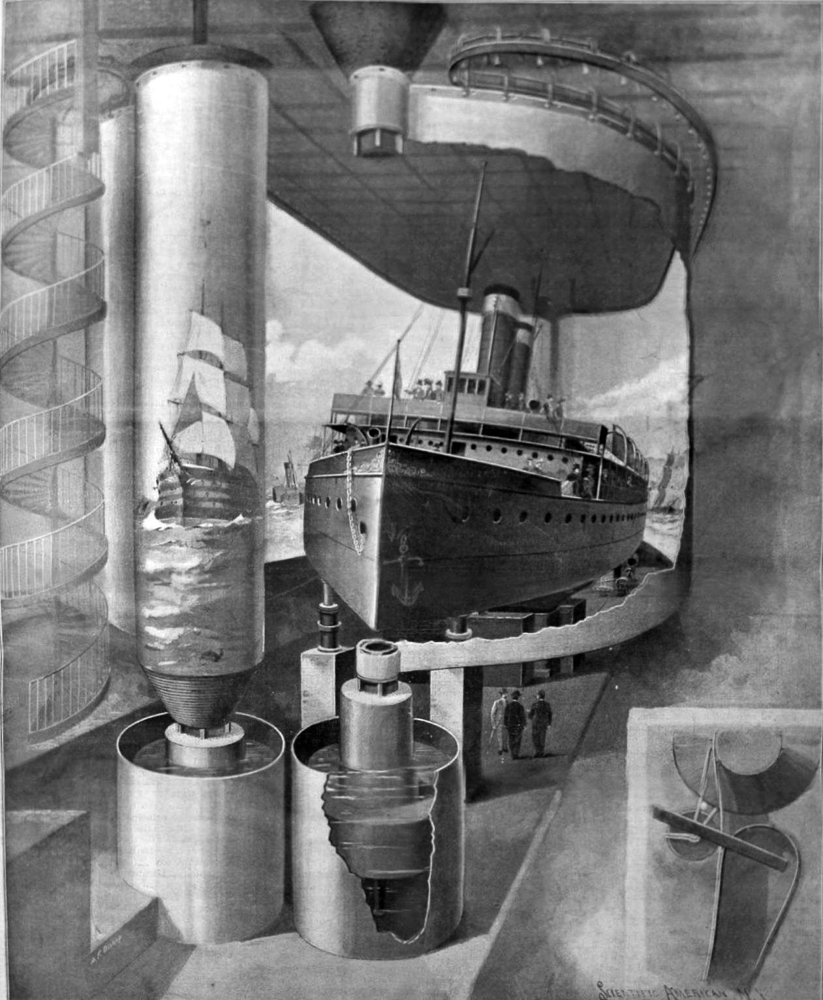
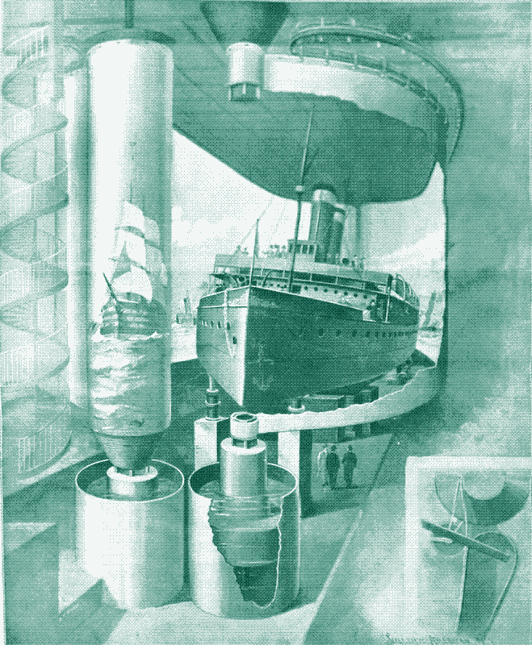
[Left] The original image (277KB)
[Right] The image dithered with the article’s category color (79KB)
With an image-sprite,3 a single image with all the icons are loaded, and the styling just crops into a certain part of this image to show a specific icon. This prevents having to make a server request for every single icon, instead having just one call for an image that can be cached in the browser.
This is a solar-powered website, which means it sometimes goes offline.
It’s possible to build a setup that prevents the site from going offline – but this also means more infrastructure, and more resources and energy that goes into building that infrastructure. This is what we call embodied energy.4
Our goal was never 100% uptime: it was to change our visitor’s relationship to the internet.
how can we be more intentional about our digital consumption?
5
Back when the first website launched, browsers could only render text. Internet access was delivered through dial-up modems and local area networks (LANs) and the maximum speed for modems was 56KB/s. But by 2009, cable internet speeds offered an average 8MB/s, and today, the average internet speed in the states is 227MB/s for desktop, and 111 MB/s for mobile.6
The technology delivering and displaying websites has become dramatically more efficient.
in the meantime, websites have been taking advantage of these connection speeds. currently, the average desktop site weighs 2498 KB and 2216 KB on mobile–an increase of 434% and 1430% since 2010.
more efficient
≠
more sustainable
making something more efficient does not necessarily mean more sustainable. usage tends to increase as a result of the efficiency (called Jevons paradox in economics) and causes a “rebound effect”7.
less use
=
more sustainable
- less data: to minimize website size and server-load
- less time online: to build a site that goes offline
- more information: to reveal the system infrastructure
part two
time-sensitive websites
1. websites with active and inactive states
2. websites designed to change over time
3. websites that are archives of a single moment
2. websites designed to change over time
3. websites that are archives of a single moment
websites with downtime
websites with inactive states can direct visits to happen at certain times, offering opportunities for a more concentrated collective experience
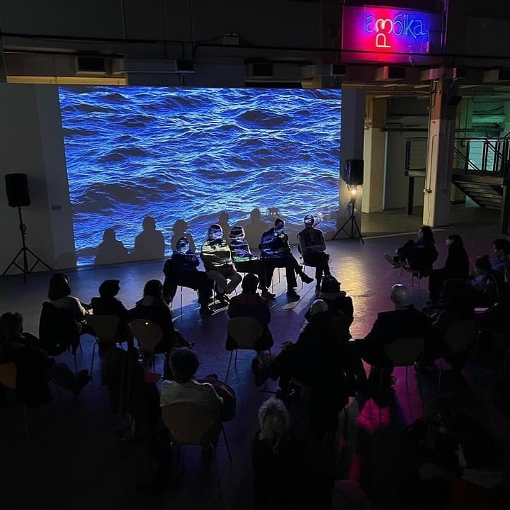
A website as peformance,
a time-based medium
A website can have opening and closing hours, or durational expression. this means that when and how the audience visits the site becomes an integral part of how the website works.
When online work fails to to be “on,” it can have a similar effect to breaking the fourth wall–the boundary between website and audience disappears.
Downtime, or deliberately “breaking” the site can emphasize a certain point of view or communicate something unexpected.
Laurel Schwulst’s are.na collection Performance is Change over Time outlines how durational websites can follow various traces – the trace of the “Trace Passing of Time,” “Trace of the Visitor,” and “Trace of the Making.”
websites that change over time
websites might vary across multiple visits,
or evolve over the duration of a single visit
If websites with deliberate downtime embody lightness through a limitation of time,
websites that change over time might embody lightness through a specificity of time
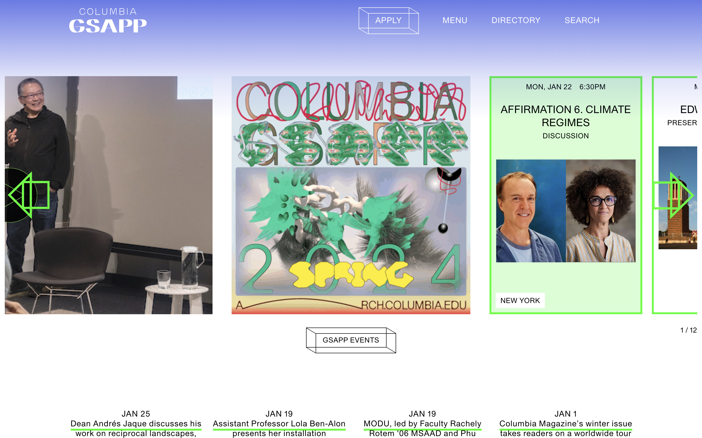
 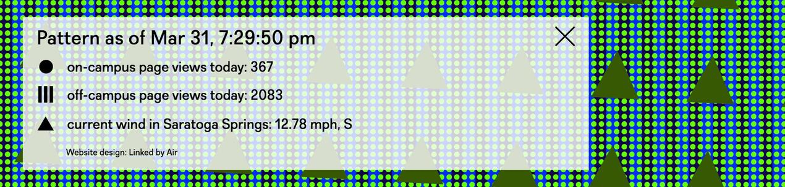
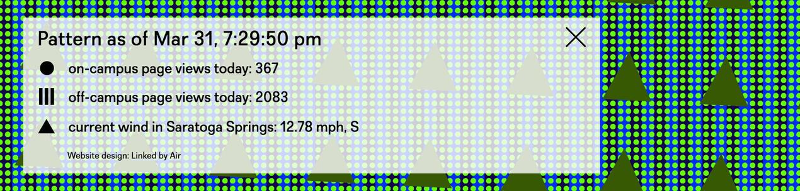
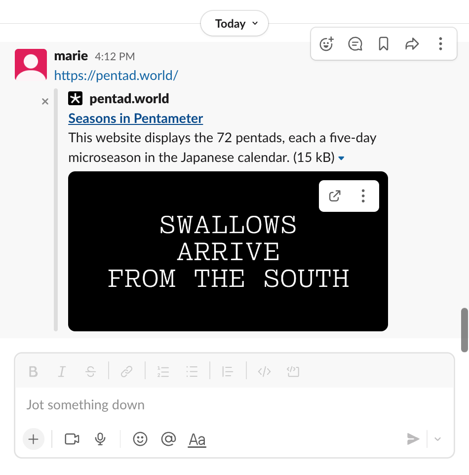
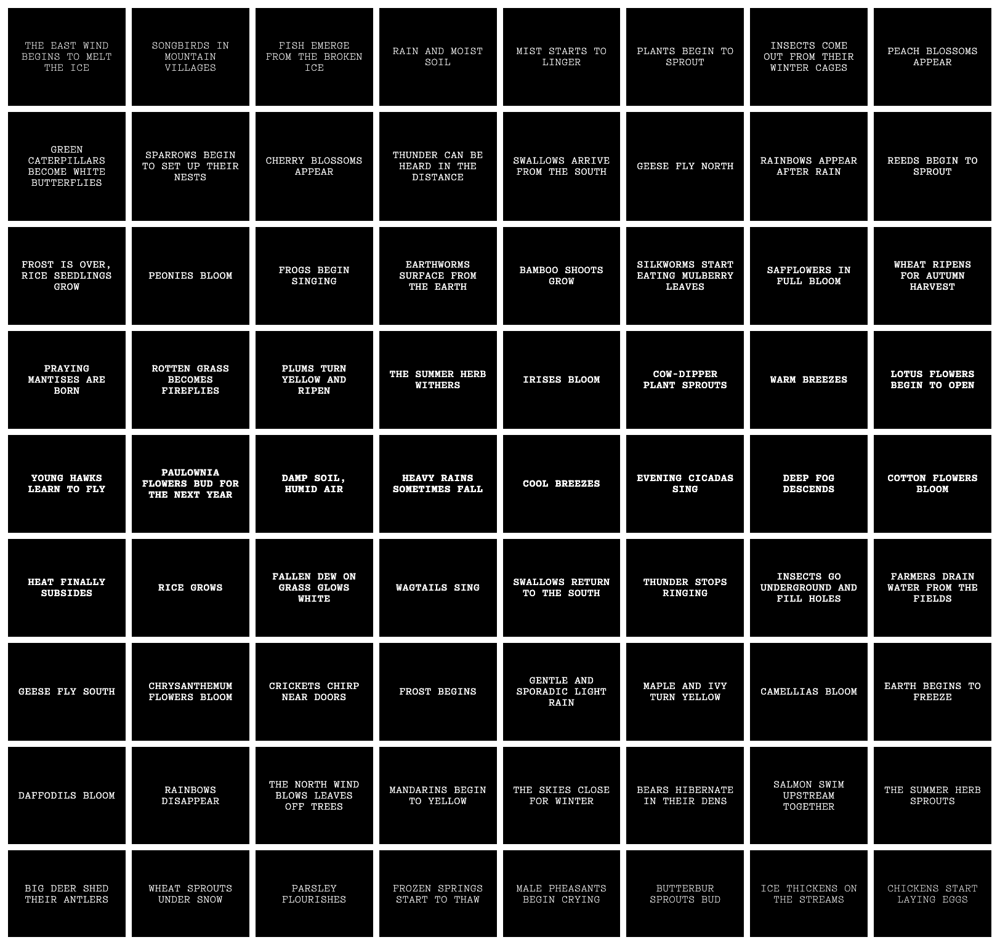
websites that archive time
Sometimes, websites simply preserve
a single point of time
part three
Harnessing the environment
“A physical process as basic as water condensation allows Haacke to redefine not only the work of art as a living system, but, most significantly, the role of the viewer or user of art. While the patterns of water trails within the cube have to do with the conditions of their immediate surroundings, the human presence is also part of this environment.”
How can a website be a living system? How might it visually dialogue with the presence of human beings?
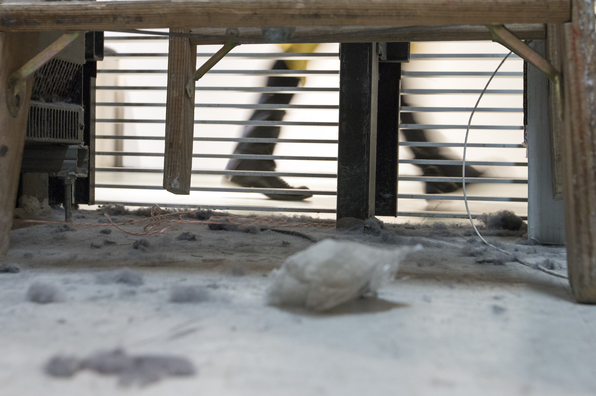
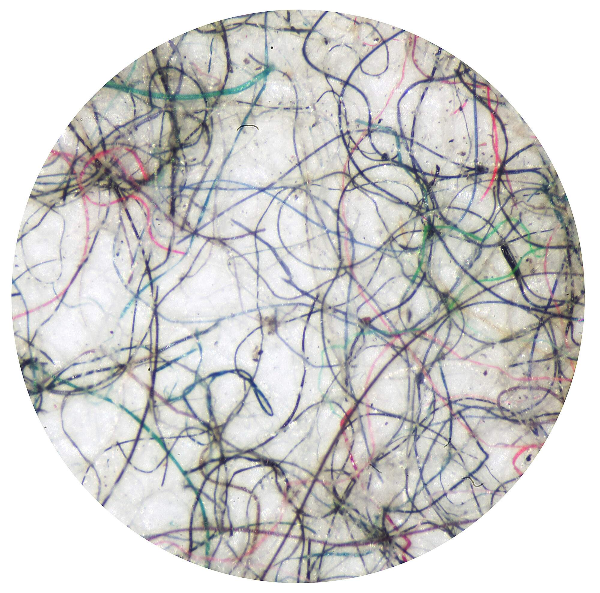
“Dust consists of material from both inside and outside, from Earth and the cosmos, from places very high and very low–and at the Museum, it’s literally an intermingling of different people from around the world.”
What might be the dust of a website? How can we trace the residues of stories that are already here? How can these reveal inherent relationships between people, infrastructures and systems?
“light” methodologies trace life in existing conditions
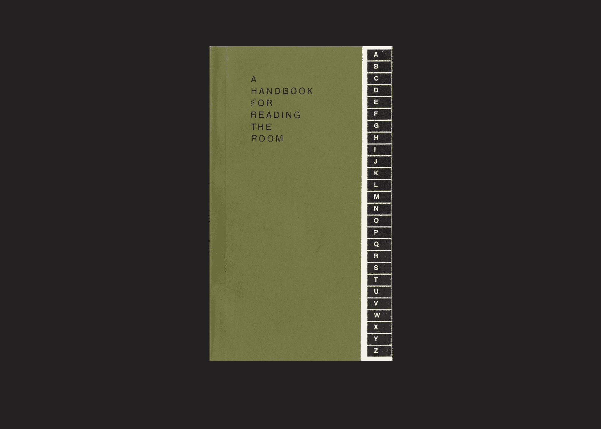
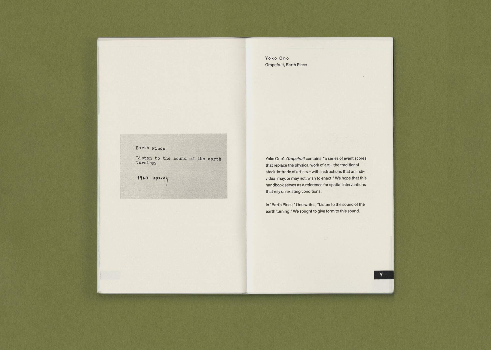
“Listen to the sound of the earth turning”
listening and reading as strategies for lightness
Even with digital work, we listen to detect any form of input, and we read data sent from elsewhere.
these are usually handled through APIs.
An API is a general term for any kind of communication between computer programs. An event listener is a web API helps us detect events like clicking, scrolling, dragging, that occur in the browser.
Another way we might use an API is to read data from an external source, usually exchanged in the json format.
Although websites are digital material, we can communicate with physical material by tapping into the fact that it is served up on a live network – a network that can connect to anything in the world.
{
"weather": [
{
"id": 800,
"main": "Clear",
"description": "clear sky",
"icon": "01n"
}
],
"main": {
"temp": 19.72,
"feels_like": 7.12,
"temp_min": 17.62,
"temp_max": 21.09,
"pressure": 1018,
"humidity": 57
}
}
A website may not be able to produce droplets of condensation or breed dust mites through direct contact, but we can always simulate this kind of input through an exchange of the root-level material: data.
part four
now is a coordinate
Time is a singular entity with many “faces”
there is only one “Date” object in JavaScript. underlying, the date is stored in UTC8 – and it is the same, whether you are in New York, Berlin, or Taipei. It is simply displayed differently according to your local timezone, determined by your browser.
This is the default output of the Date object. It includes: date, time, offset from UTC, and the name of the timezone.
Time is defined by place of access
“Now is a place, a co-ordinate; i am where ‘I’ am not, and iThink (type, write, and right-click) therefore I am. If space is a practiced place, then collective navigation produces the commons.”
Time is defined by the technology that displays it


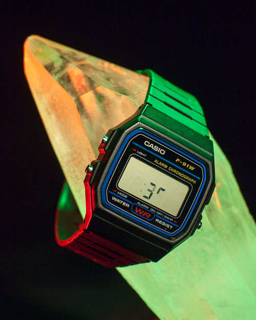

any point in time is actually a durational slice of time, and it is a piece of technology that provides a shape to it
“Time is like that – both point AND duration. This is how it can bend and warp. A week, a second, a season: all are specific and discrete, but none are the same. The present can be cut to any number of lengths, from a single electric pulse of an electronic circuit to the display period of a digital timepiece.”
| JavaScript Code | Description | Example output |
|---|---|---|
new Date()
|
the current date and time | Sun Jan 21 2024 03:03:00 GMT-0500 (Eastern Standard Time) |
new Date(1705824180000)
|
store a specific date and time in milliseconds(ms) since epoch9 | Sun Jan 21 2024 03:03:00 GMT-0500 (Eastern Standard Time) |
new Date("Jan 21, 2024") |
store a specific date and time. because time is not specified, it will assume midnight in your local timezone. | Sun Jan 21 2024 00:00:00 GMT-0500 (Eastern Standard Time) |
new Date("Jan 21, 2024 13:00:59")
|
store a specific date and time. unless a timezone is specified, it will assume you are specifying this in your local timezone.10 | Sun Jan 21 2024 13:00:59 GMT-0500 (Eastern Standard Time) |
new Date("Jan 21, 2024 13:00:59-08:00")
|
store a specific date and time with a specific timezone offset.11 (here, 8h behind UTC, or 3 hours behind EST.) | Sun Jan 21 2024 16:00:59 GMT-0500 (Eastern Standard Time) |
new Date("Jan 21, 2024 13:00:59Z")
|
store a specific date and time in UTC (specified by the Z suffix)
|
Sun Jan 21 2024 08:00:59 GMT-0500 (Eastern Standard Time) |
new Date("2024-01-21T13:00:59")new Date(2024,0,21,13,0,59,0)
|
store a specific date and time in ISO format: YYYY-MM-DDTHH:mm:ss.sssZ12. Note that when defining the date using numbers, not strings, the month is counted from a 0 index, meaning January is 0.
|
Sun Jan 21 2024 13:00:59 GMT-0500 (Eastern Standard Time) |
let now = new Date("Jan 21, 2024 13:00:59")
|
|||
| JavaScript Code | Description | Possible range | example output |
|---|---|---|---|
.getDate()
|
numerical date | 1–31 | 21 |
.getDay()
|
day of the week | 0–6 (sun–sat) | 0 |
.getFullYear()
|
full year | 2024 | |
.getMonth()
|
numerical month | 0–11 | 0 |
.getHours()
|
hour | 0–23 | 13 |
.getMinutes()
|
minutes | 0–59 | 0 |
.getSeconds()
|
seconds | 0–59 | 0 |
.getMilliseconds()
|
milliseconds | 0–999 | 0 |
.getTime()
|
milliseconds since epoch | 1705860059000 | |
.getTimezoneOffset()
|
difference from UTC in minutes13 | -720 / +840 (UTC-12 to UTC+14) | 300 |
approching something with “lightness” allows us to be more intimate with the material we work with.
we can better understand its underlying mechanics, and the surrounding forces that affect it